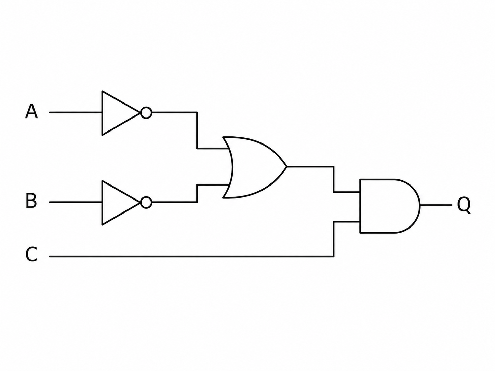
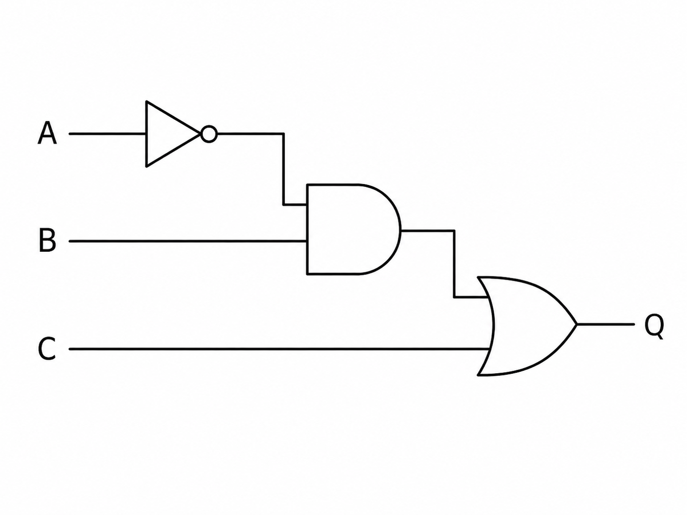
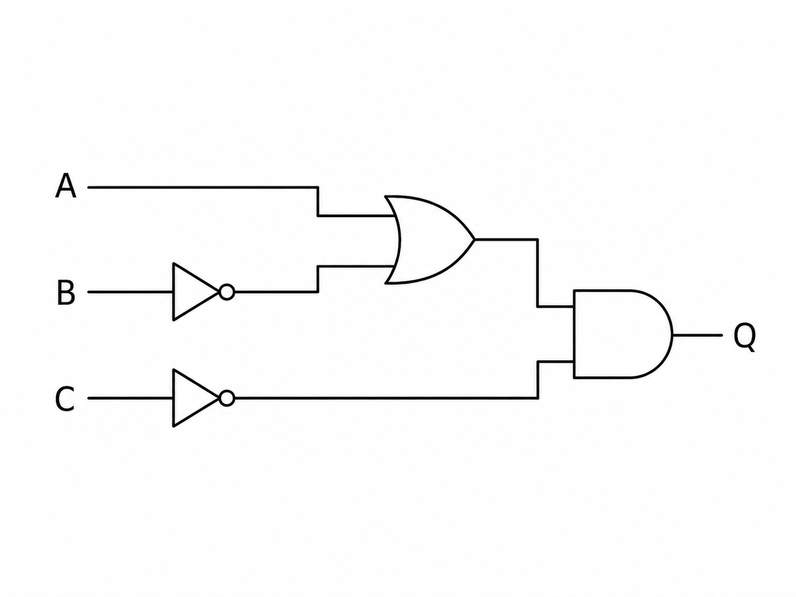
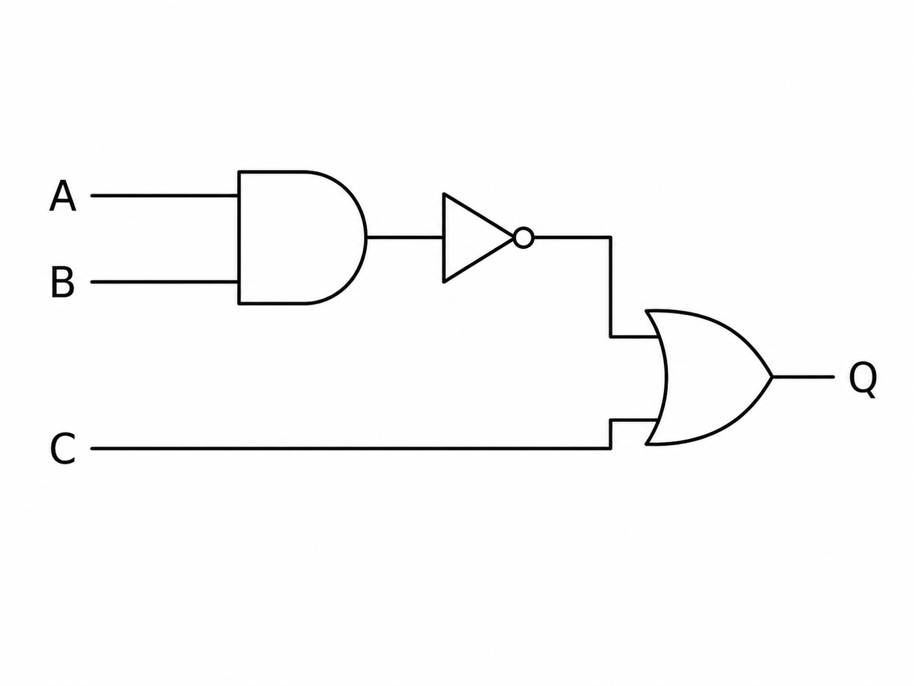
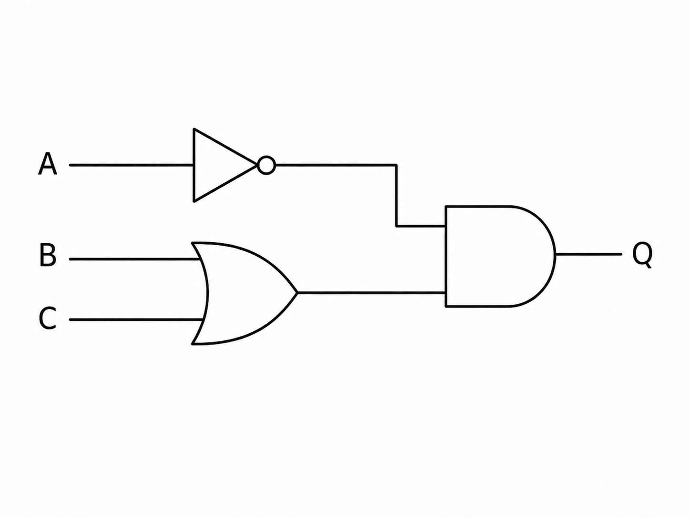

1) Write the Boolean expression represented by Figure 1. (3 marks)

Mark scheme
Award up to 3 marks:
- Identifies A AND B.
- Identifies the result is ORed with C.
- Correct expression: Q = (A AND B) OR C.
Paper 2
What this topic covers: reading logic diagrams, writing Boolean expressions, drawing circuits and completing truth tables using AND, OR and NOT gates.
1) Write the Boolean expression represented by Figure 1. (3 marks)
Award up to 3 marks:
2) Write the Boolean expression represented by Figure 2. (3 marks)

Award up to 3 marks:
3) Complete the truth table for Q = (A AND B) OR C. (4 marks)
| A | B | C | A AND B | Q |
|---|---|---|---|---|
| 0 | 0 | 0 | ||
| 0 | 0 | 1 | ||
| 0 | 1 | 0 | ||
| 0 | 1 | 1 | ||
| 1 | 0 | 0 | ||
| 1 | 0 | 1 | ||
| 1 | 1 | 0 | ||
| 1 | 1 | 1 |
Award up to 4 marks for correct values in the completed table:
| A | B | C | A AND B | Q |
|---|---|---|---|---|
| 0 | 0 | 0 | 0 | 0 |
| 0 | 0 | 1 | 0 | 1 |
| 0 | 1 | 0 | 0 | 0 |
| 0 | 1 | 1 | 0 | 1 |
| 1 | 0 | 0 | 0 | 0 |
| 1 | 0 | 1 | 0 | 1 |
| 1 | 1 | 0 | 1 | 1 |
| 1 | 1 | 1 | 1 | 1 |
4) Complete the truth table for Q = (NOT A AND B) OR C. (4 marks)

| A | B | C | NOT A | NOT A AND B | Q |
|---|---|---|---|---|---|
| 0 | 0 | 0 | 1 | 0 | |
| 0 | 0 | 1 | 1 | 0 | |
| 0 | 1 | 0 | |||
| 0 | 1 | 1 | |||
| 1 | 0 | 0 | |||
| 1 | 0 | 1 | |||
| 1 | 1 | 0 | |||
| 1 | 1 | 1 |
Award up to 4 marks for correct values in the completed table:
| A | B | C | NOT A | NOT A AND B | Q |
|---|---|---|---|---|---|
| 0 | 0 | 0 | 1 | 0 | 0 |
| 0 | 0 | 1 | 1 | 0 | 1 |
| 0 | 1 | 0 | 1 | 1 | 1 |
| 0 | 1 | 1 | 1 | 1 | 1 |
| 1 | 0 | 0 | 0 | 0 | 0 |
| 1 | 0 | 1 | 0 | 0 | 1 |
| 1 | 1 | 0 | 0 | 0 | 0 |
| 1 | 1 | 1 | 0 | 0 | 1 |
5) Draw a logic gate diagram for Q = (A OR B) AND C. (4 marks)
Award up to 4 marks:

6) Draw a logic gate diagram for Q = (A AND NOT B) OR NOT C. (5 marks)
Award up to 5 marks:

7) Figure 4 shows a logic circuit used in an alarm system. The alarm output Q is 1 only for certain input combinations. Explain how the circuit produces Q. (4 marks)

1 mark for each correct point:
8) Identify which diagram, Figure 5 or Figure 6, represents Q = NOT((A AND B) OR C). (2 marks)


Award up to 2 marks:
9) A student writes Q = NOT A AND B OR C for Figure 7. Identify the error and write the corrected expression. (3 marks)

Award up to 3 marks:
10) Describe the role of AND, OR and NOT gates in Boolean logic. (3 marks)
1 mark for each correct description: